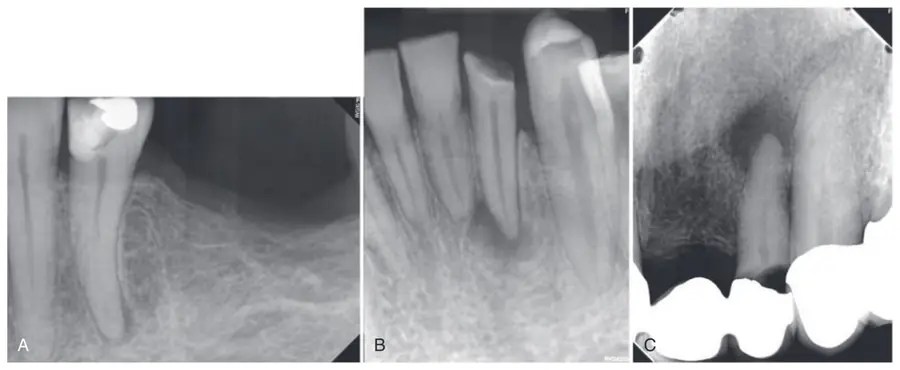
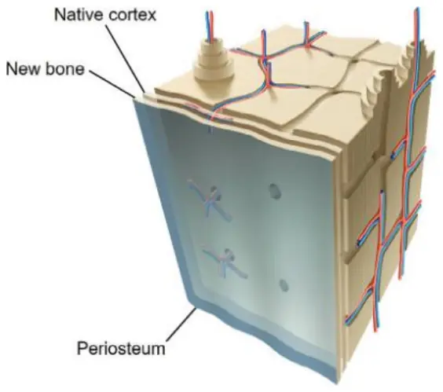

نسخه استخراجشده؛ ترجمه یا تأیید علمی انجام نشده است. وضعیت: captured
حالا چارچوب گامبهگام تفسیر (محل، حاشیه، ساختار داخلی، اثر بر مجاور) را روی شایعترین ضایعهی فک به کار میبریم.

ولی اول یک هشدار: «ضایعات بسیار زودرس ممکن است تغییر کم یا هیچ تغییری در بافتهای پریاپیکال روی تصویر نشان ندهند، و تشخیص ممکن است تنها بر تست حیات پالپ و علائم و نشانههای بالینی تکیه کند.»
گام ۱ — محل. «در بیشتر موارد، بیماری التهابی پریاپیکال پیرامون آپکس ریشه یا مجاور یکسوم آپیکالی ریشه و درون همین نواحی از فضای PDL پدید میآید.» اپیسنتر «آپیکال یا زیرِ آپکس ریشهی درگیر» است.
و یک نکتهی پویا: «با بزرگ شدن ضایعه، اپیسنتر در جهت آپیکالتر و دورتر از آپکس ریشه مهاجرت میکند.»
و محلهای کمتر شایع که سرنخ میدهند: «کمتر شایع، این ضایعات ممکن است مجاور سطح ریشه در محل خروج یک کانال فرعی، در محل پرفوریشن سطح ریشه از ابزارگذاری نادرست کانال، یا در محل شکستگی ریشه قرار گیرند.» — یعنی یک ضایعهی میدرووت میتواند شکستگی افقی ریشه را لو بدهد.
گام ۲ — حاشیه. «معمولاً نامشخص تا نسبتاً واضح است، و مرز میتواند کانتوری صاف و هیدرولیک، مانند سطح یک بادکنک داشته باشد.»
و منطقهی گذارش چه چیزی را میگوید؟ «فراتر از مرز ناحیهی رادیولوسنت، ظاهر استخوان ممکن است از چیزی رادیواوپکتر به ظاهری نرمالتر گذار کند. پهنای این گذار را میزان اسکلروز موجود تعیین میکند — که خودش بازتاب مزمن بودن پاسخ التهابی است.» و «بهندرت حاشیه واضح و کورتیکه با منطقهی گذار باریک است».
گام ۳ — ساختار داخلی. «بیماری التهابی پریاپیکال زودرس ممکن است هیچ تغییر آشکاری در الگوی نرمال استخوان در آپکس نشان ندهد.» و علتش: «ناتوانی در ادراک تغییر تا حد زیادی به مقدار تحلیل استخوان کورتیکال روپوش که برای دیدن تغییر لازم است بستگی دارد».
و دو محل که این دشواری بیشتر است: «شناسایی تغییرات زودرس دمینرالیزاسیون ممکن است در ناحیهی پرمولر و مولر مندیبل چالش ویژهای باشد، و در ماگزیلا سوپرایمپوزیشن ساختارهای آناتومیک مجاور هم میتواند تغییرات زودرس را بپوشاند.»
و نخستین تغییر رادیولوژیک — این را حفظ کن: «پهن شدن کانونی فضای لیگامان پریودنتال آپیکال، و این ممکن است با از دست رفتن وضوح لامینا دورای مجاور همراه باشد.» و یک قاعدهی منفی مهم: «این ناحیهی رادیولوسنت نباید هیچ ناحیهی مینرالیزاسیون داخلی مجزایی داشته باشد.» با گذشت زمان، «ضخیم شدن کانونی لامینا دورای آپیکال» دیده میشود که «نشانهی زودرس اسکلروزِ در حال تشکیل» است.
گام ۴ — اثر بر ساختارهای مجاور. و اینجا دو الگو نام مخصوص دارند.

گسترهی اسکلروز: بسته به «بیماریزایی میکروارگانیسمها، شدت پاسخ ایمنی میزبان، عروقرسانی بافت و مزمن بودن»، پاسخ اسکلروتیک میتواند «به دندانهای مجاور، نواحی بدون دندان، یا تا یک مرز استخوانی» گسترش یابد.
و یک نکتهی تشخیصی ظریف: «گاهی ضایعهی بیماری التهابی پریاپیکال ممکن است به نظر برسد کاملاً از استخوان اسکلروتیک ساخته شده (استئیت اسکلروزان)، ولی معمولاً شواهدی از پهن شدن فضای PDL آپیکال وجود دارد.» — همان یک نشانه، تشخیص را نجات میدهد.
استخوانسازی نو پریوستئال و دو نامش: نتیجه «رسوب لایههای جفتِ استخوان نو و بافت همبند است که یا کمی محدب یا تقریباً موازی با سطح استخوان جهتگیری شدهاند».
و موکوزیت: «اگر بیماری التهابی پریاپیکال کف حفرهی بینی یا سینوس ماگزیلاری را درگیر کند، میانجیهای التهابی ممکن است پوشش مخاطی مجاور حفرهی هوایی را تحریک کنند و ضخیم شدن موضعی مخاط در کف مجاور حفره ایجاد کنند که موکوزیت نام دارد.» روی تصویر: «یک نوار رادیواوپک بافتی مجاور کف بالارفته».
و اثر بر خود دندان — تشبیه زیبایی هست: «از بسیاری جهات، پاسخ دندان به التهاب پاسخ استخوان را از نزدیک آینه میکند.»
و یک ویژگی مهم هر دو: «پاسخ ریشهی دندان، چه تحلیل و چه هایپرسمانتوز، ممکن است نامتقارن و غیریکنواخت پیرامون محیط ریشه باشد.»
و در دندان شیری: «وقتی استئیت رارفاکتیو دندانهای شیری را درگیر کند، رویش دندان دائمی زیرین ممکن است مختل شود چون این دندانها میتوانند جابهجا شوند.»
و دربارهی انتخاب روش تصویربرداری: معاینهی اولیه «یک یا چند پریاپیکال داخلدهانی» است. «تصاویر اکلوزال و پانورامیک ممکن است این معاینه را تکمیل کنند»، و بهطور مشخص «تصاویر اکلوزال برای شناسایی استخوانسازی نو پریوستئال در سطح استخوان مفیدند». برای کشف قطعی استخوانسازی پریوستئال و سکسترا، CBCT یا MDCT مفیدند؛ MRI برای دیدن تغییرات مغز استخوان؛ و اسکن پزشکی هستهای با تکنسیوم و گالیوم میتواند تشخیص را تأیید کند.